감정평가사-1차-1교시(구) (2011-07-03 기출문제)
1과목: 민법(총칙,물권)
1. 신의성실의 원칙(신의칙)에 관한 설명으로 옳지 않은 것은? (다툼이 있으면 판례에 의함)
- 미성년자가 법정대리인의 동의 없이 신용구매계약을 체결한 후 법정대리인의 동의 없음을 이유로 그 계약을 취소하는 것은 신의칙에 반하지 않는다.
- 채권자가 채권을 확보하기 위하여 제3자의 부동산을 채무자에게 명의신탁하도록 한 다음 그 부동산에 대해 강제집행을 하는 것은 신의칙에 반한다.
- 회사의 이사로 재직하면서 회사의 확정채무를 보증한 자는 이사직을 사임한 후에 사정변경을 이유로 그 보증계약을 해지할 수 있다.
- 신의성실의 원칙에 반하거나 권리남용이 되는 경우에는 당사자의 주장이 없더라도 법원은 직권으로 이를 판단할 수 있다.
- 징계면직처분에 불복하던 근로자가 이의 없이 퇴직금을 수령하고 다른 생업에 종사하다 징계면직일로부터 5년 후에 제기한 해고무효확인청구는 신의칙 및 실효의 원칙에 위배되어 허용될 수 없다.
(정답률: 알수없음)

2. 미성년자의 행위능력에 관한 설명으로 옳지 않은 것은?
- 법정대리인이 미성년자에 대하여 특정한 영업에 관하여 허락을 하면 법정대리인의 대리권은 그 범위에서 소멸한다.
- 법정대리인은 미성년자의 근로계약을 대리할 수 없지만, 미성년자의 임금청구는 대리할 수 있다.
- 상대방은 추인이 있을 때까지 미성년자의 단독행위를 거절할 수 있다.
- 미성년자와 계약을 체결한 자는, 계약 당시에 상대방이 미성년자임을 알았다면 그 법정대리인에게 자기의 의사표시를 철회할 수 없다.
- 미성년자와 계약을 체결한 자는 계약 당시에 상대방이 미성년자임을 알았더라도 그 법정대리인에게 추인 여부의 확답을 최고할 수 있다.
(정답률: 알수없음)
3. 민법상 법인에 관한 설명으로 옳지 않은 것은? (다툼이 있으면 판례에 의함)
- 법인은 대표권이 없는 이사의 행위에 대해서 '법인의 불법행위책임'(제35조)을 진다.
- 법인과 이사의 이익이 상반하는 사항에 관해서 그 이사는 대표권이 없다.
- 이사가 대표권 없이 한 법률행위에는 민법의 무권대리 또는 표현대리의 규정이 준용된다.
- 이사의 대표권은 정관으로 제한할 수 있고, 이를 등기하면 제3자에게 대항할 수 있다.
- 이사는 그 임기가 만료되거나 이사직을 사임한 경우에도 후임이사가 선임될 때까지는 계속해서 이사의 직무를 수행할 수 있는 업무수행권을 갖는다.
(정답률: 알수없음)
4. 2008년 3월 5일 탑승했던 비행기의 추락으로 생사불명이 된 甲에게 2010년 3월 5일 실종선고가 내려졌다. 乙은 甲의 배우자이다. 다음 설명으로 옳지 않은 것만을 모두 고르면?
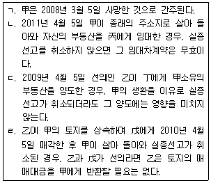
- ㄱ
- ㄴ, ㄷ
- ㄷ, ㄹ
- ㄱ, ㄴ, ㄹ
- ㄱ, ㄴ, ㄷ, ㄹ
(정답률: 알수없음)
5. 복대리에 관한 설명으로 옳은 것은?
- 복대리인은 대리인이 본인의 이름으로 선임한 본인의 대리인이다.
- 대리인이 복대리인을 선임한 후에는 대리인의 대리권은 소멸한다.
- 법정대리인에 의해 선임된 복대리인은 법정대리인이다.
- 복대리인이 제3자와 계약을 체결하는 경우, 본인의 이름 이외에 대리인의 이름도 현명하여야 한다.
- 복대리인은 대리인의 대리권에 기초하기 때문에 대리인의 대리권이 소멸하면 복대리인의 복대리권도 소멸한다.
(정답률: 알수없음)
6. 법정추인에 해당하지 않는 경우는?
- 취소권자가 취소할 수 있는 법률행위로 인하여 발생한 채무의 이행을 상대방에게 청구한 경우
- 취소할 수 있는 법률행위로 인하여 발생한 채무를 소멸시키고 그 대신 다른 채무를 성립시키기로 계약한 경우
- 취소권자가 상대방으로부터 담보를 제공받은 경우
- 취소권자의 상대방이 취소할 수 있는 법률행위로 취득한 권리의 일부를 제3자에게 양도한 경우
- 취소권자가 취소할 수 있는 법률행위로 인하여 발생한 채무를 상대방에게 이행한 경우
(정답률: 알수없음)
7. 대리인과 사자(使者)에 관한 설명으로 옳지 않은 것은?
- 사자는 의사능력자일 필요는 없다.
- 대리행위가 효력을 발생하기 위해서는 대리인은 행위능력자이어야 한다.
- 대리인은 자기가 결정한 의사를 표시하나, 사자는 본인이 결정한 의사를 표시한다.
- 대리의 경우, 의사표시의 하자의 유무에 관하여는 대리인을 표준으로 결정한다.
- 사자에 의한 의사표시는 본인이 효과의사를 결정한다.
(정답률: 알수없음)
8. 청산인의 직무에 해당하지 않는 것만을 모두 고르면?
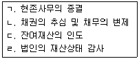
- ㄹ
- ㄱ, ㄷ
- ㄴ, ㄷ
- ㄱ, ㄴ, ㄹ
- ㄱ, ㄴ, ㄷ, ㄹ
(정답률: 알수없음)
9. 조건과 기한에 관한 설명으로 옳지 않은 것은? (다툼이 있으면 판례에 의함)
- 기한의 도래는 소급효가 있다.
- 현상광고에서 정한 행위의 완료에는 조건이나 기한을 붙일 수 있다.
- 기성조건이 정지조건이면 조건 없는 법률행위가 되고, 해제조건이면 그 법률행위는 무효이다.
- 조건을 붙이는 것이 허용되지 않는 법률행위에 조건을 붙인 경우, 그 조건만을 분리하여 무효로 할 수 없다.
- 기한의 이익은 당사자의 특약이나 법률행위의 성질상 분명하지 않으면, 채무자에게 있는 것으로 추정된다.
(정답률: 알수없음)
10. 소멸시효의 중단사유로서의 승인에 관한 설명으로 옳지 않은 것은? (다툼이 있으면 판례에 의함)
- 승인은 소멸시효의 진행이 개시된 이후에만 가능하고 그 이전에 승인을 하더라도 시효가 중단되지는 않는다.
- 변제기한의 유예를 요청하는 것은 채무의 승인에 해당한다.
- 시효완성 전에 한 채무의 일부변제는, 그 금액에 관하여 다툼이 없는 한, 채무승인에 해당한다.
- 시효중단의 효력이 있는 승인에는 상대방의 권리에 관한 처분의 능력이나 권한을 요한다.
- 채무승인이 있었다는 사실은 이를 주장하는 채권자 측에서 증명하여야 한다.
(정답률: 알수없음)
11. 관습법에 관한 설명으로 옳은 것은? (다툼이 있으면 판례에 의함)
- 온천수에 관한 권리는 관습법상 물권이 아니라 상린관계상 공용수 또는 생활상 필요한 용수에 관한 권리에 해당한다.
- 미등기 무허가건물의 양수인에게 소유권에 준하는 관습법상의 물권이 인정된다.
- 미등기건물을 대지와 함께 매도하였으나 대지에 관하여만 매수인 앞으로 소유권이전등기가 경료된 경우, 매도인에게 관습상의 법정지상권이 인정된다.
- 일반 주민들이 다른 사람의 공동 사용을 방해하지 않는 한 자유로이 이용할 수 있는 공원이용권은 관습법상 물권이다.
- 도로가 개설된 후 장기간에 걸쳐 일반의 통행에 제공되어 왔고 공로로 통하는 유일한 것일지라도 관습법상 통행권이 인정되지 않는다.
(정답률: 알수없음)
12. 甲은 자신의 토지를 은닉하기 위해 乙과 짜고 매매를 원인으로 乙 앞으로 소유권이전청구권 보전을 위한 가등기를 해 준 뒤, 다시 丙에게 그 토지를 매도하고 소유권이전등기를 해 주었다. 그 후 가등기에 기하여 乙명의의 본등기가 경료되었고, 乙은 그 토지를 丁에게 매도하고 소유권이전등기를 해 주었다. 丙은 乙명의의 가등기와 본등기가 허위임을 알게 되었다. 다음 설명으로 옳지 않은 것은? (다툼이 있으면 판례에 의함)
- 甲과 乙 사이의 매매계약 및 가등기는 무효이다.
- 乙과 丁 사이의 매매계약은 유효하다.
- 乙명의의 본등기를 할 때 등기관은 丙명의의 소유권이전등기를 직권으로 말소한다.
- 丁이 甲과 乙 사이의 가장행위에 대하여 알았다면, 丙은 丁에 대하여 말소등기를 구할 수 있다.
- 만약 甲과 乙이 짜고 허위로 매매계약을 한 것이 아니라면, 乙은 가등기한 때로부터 그 토지의 소유자이다.
(정답률: 알수없음)
13. 乙은 甲소유의 토지를 20년간 소유의 의사로 평온ㆍ공연하게 점유하였음을 이유로 甲에게 소유권이전등기를 청구할 수 있게 되었다. 다음 설명으로 옳지 않은 것은? (다툼이 있으면 판례에 의함)
- 乙이 취득시효기간의 만료로 소유권이전등기청구권을 취득한 후 점유를 상실하였다면 바로 소유권이전등기청구권은 소멸한다.
- 乙이 등기를 경료하지 않고 있는 사이에 甲이 丙에게 그 토지를 처분하고 이전등기까지 마쳤다면, 특별한 사정이 없는 한 乙은 취득시효완성을 가지고 丙에게 대항할 수 없다.
- 乙이 등기를 경료하지 않고 있는 사이에 甲이 丙에게 그 토지를 처분하여 이전등기를 해 준 후 甲이 다시 토지소유권을 취득한 경우, 乙은 甲에게 시효완성을 주장할 수 있다.
- 乙이 등기를 경료하지 않고 있는 사이에 甲이 丙에게 그 토지를 처분한 후 乙이 소유의 의사로 평온ㆍ공연하게 다시 20년 넘게 점유한 경우, 乙은 丙에게 취득시효의 완성을 주장할 수 있다.
- 만약 甲이 취득시효 진행 중에 그 토지를 丙에게 양도하고 등기를 이전해 준 후에 시효가 완성되었다면, 乙은 丙에게 시효취득을 주장할 수 있다.
(정답률: 알수없음)
14. 집합건물에 관한 설명으로 옳지 않은 것은? (다툼이 있으면 판례에 의함)
- 구분소유자의 특별승계인에게 그의 체납관리비를 승계하도록 한 관리규약은 공용부분 관리비에 한하여 유효하다.
- 관리규약에 구분소유자의 특별승계인에게 그의 체납관리비를 승계하도록 되어 있더라도 관리비에 대한 연체료는 특별승계인에게 승계되지 않는다.
- 공용부분의 변경에 관한 사항은 원칙적으로 관리단집회에서 구분소유자의 4분의 3 이상 및 의결권의 4분의 3 이상의 결의로써 결정한다.
- 구분소유자는 원칙적으로 그가 가지는 전유부분과 분리하여 대지사용권을 처분할 수 있다.
- 공용부분에 대한 공유자의 지분은 그가 가지는 전유부분의 처분에 따른다.
(정답률: 알수없음)
15. 전세권에 관한 설명으로 옳지 않은 것은? (다툼이 있으면 판례에 의함)
- 전세권자에게는 경매청구권이 있다.
- 전세금의 지급은 전세권 성립요소가 아니다.
- 전세권자는 전세권설정자에게 필요비상환을 청구할 수 없다.
- 전세권자가 목적물을 타인에게 임대한 경우, 임대하지 않았으면 면할 수 있었던 불가항력으로 인한 손해에 대하여도 책임을 부담한다.
- 전세권이 성립된 후 목적물의 소유권이 이전된 경우, 종전 소유자는 원칙적으로 전세권설정자의 지위를 상실하여 전세금반환의무를 면한다.
(정답률: 알수없음)
16. 물권적 청구권에 관한 설명으로 옳지 않은 것은? (다툼이 있으면 판례에 의함)
- 소유자는 자신의 물건을 권원 없이 점유하는 자에 대해 점유자가 과실이 없더라도 그 반환을 청구할 수 있다.
- 물권적 청구권은 물권과 분리하여 양도할 수 있다.
- 진정명의회복을 위한 소유권이전등기청구권은 소유물 방해배제청구권에 해당한다.
- 공사로 인하여 점유의 방해를 받은 경우, 공사착수 후 1년이 경과한 때에는 방해제거를 청구할 수 없다.
- 지역권자는 지역권 침해를 이유로 승역지의 반환을 청구할 수 없다.
(정답률: 알수없음)
17. 乙은 甲으로부터 2011년 1월 5일 甲소유의 X토지를 매수하는 계약을 체결하면서 재산상황을 은폐하기 위하여 X토지에 대한 소유권이전등기를 여자친구 丙명의로 하기로 丙과 명의신탁약정을 하였다. 그 후 甲은 乙의 부탁대로 丙명의로 소유권이전등기를 해 주었다. 다음 설명으로 옳지 않은 것은? (다툼이 있으면 판례에 의함)
- 乙과 丙 사이의 약정은 무효이다.
- X토지에 대한 소유자는 여전히 甲이다.
- 乙은 丙에 대하여 명의신탁약정을 해지하고 X토지에 대한 소유권이전등기를 청구할 수 있다.
- 丙이 X토지를 丁에게 매도하고 소유권이전등기를 해 준 경우, 丁은 소유권을 취득한다.
- 乙이 丙과 혼인한 경우, 丙명의의 등기가 조세포탈, 강제집행의 면탈 또는 법령상 제한의 회피를 목적으로 한 것이 아니라면 혼인 후부터 그 등기는 유효하다.
(정답률: 알수없음)
18. 근저당권에 관한 설명으로 옳지 않은 것은? (다툼이 있으면 판례에 의함)
- 근저당권의 목적물이 양도된 후 피담보채무가 소멸한 경우, 근저당권설정자는 근저당권설정등기의 말소를 청구할 수 있다.
- 피담보채무를 확정시키는 근저당권설정자의 근저당권설정계약의 해제 또는 해지에 관한 권한은 근저당부동산의 소유권을 취득한 제3취득자도 원용할 수 있다.
- 근저당권자가 피담보채무의 불이행을 이유로 경매신청을 한 때에는 매수인이 매각대금을 완납한 때에 피담보채권은 확정된다.
- 근저당권의 피담보채권이 확정되기 전에 발생한 원본채권에 관하여 확정 후에 발생하는 이자나 지연손해금 채권은 채권최고액의 범위 내에서 근저당권에 의하여 담보된다.
- 확정된 피담보채권액이 채권최고액을 초과한 경우, 물상보증인이 채권최고액을 변제한 때에도 근저당권설정등기의 말소를 청구할 수 있다.
(정답률: 알수없음)
19. 甲은 乙에 대한 채권을 담보하기 위해 乙소유의 X부동산, 丙소유의 Y부동산에 각각 1번 저당권을 취득하였다. 甲은 Y부동산에 대해 담보권을 실행하여 그 경매대금으로부터 채권 전액을 배당받았다. 다음 설명으로 옳지 않은 것은? (다툼이 있으면 판례에 의함)
- 丙은 X부동산에 대한 1번 저당권을 대위취득한다.
- 丙은 乙에 대하여 구상권을 취득한다.
- Y부동산의 2번 저당권자는 X부동산의 1번 저당권에 대하여 물상대위를 할 수 있다.
- 乙은 甲에게 피담보채무가 소멸되었음을 이유로 X부동산의 1번 저당권의 말소등기를 청구할 수 있다.
- Y부동산의 2번 저당권자는 자신의 채무자 丙을 대위하여 甲에게 X부동산의 1번 저당권 이전의 부기등기를 할 것을 청구할 수 있다.
(정답률: 알수없음)
20. 지상권에 관한 설명으로 옳지 않은 것은? (다툼이 있으면 판례에 의함)
- 지상권 양도금지특약이 지상권자에게 불리한 경우에는 그 효력이 없다.
- 지상권이 존속기간의 만료로 소멸하더라도 지상물이 현존하는 때에는 지상권자는 계약갱신을 청구할 수 있다.
- 건물 이외의 공작물의 소유를 목적으로 하는 때에도 30년의 존속기간을 설정할 수 있다.
- 지상권이 소멸한 때에 지상권자가 지상물을 수거하고자 하는 경우, 지상권설정자는 상당한 가액을 제공하고 그 지상물의 매수를 청구할 수 있다.
- 지상권의 지료가 1년 연체된 상태에서 토지가 제3자에게 양도되고 다시 그 지료가 1년 6개월 연체된 경우, 토지의 새로운 소유자는 지상권의 소멸을 청구할 수 있다.
(정답률: 알수없음)
21. 민법상 법인에 관한 설명으로 옳은 것은?
- 임시이사는 대표권이 없다.
- 재단법인은 영리법인이 될 수 없다.
- 사단법인 사원의 지위는 양도할 수 없으나 상속할 수 있다.
- 사단법인 사원의 결의권은 평등하며, 정관으로 이를 달리 정할 수 없다.
- 법인 아닌 재단은 대표자 또는 관리인이 있는 경우에 소송상 당사자능력이 인정되지만, 등기능력은 인정되지 않는다.
(정답률: 알수없음)
22. 甲은 乙에게 인감도장을 주고 자신의 아파트에 관한 임대 등 일체의 관리를 위임하였고, 丙은 甲으로 행세하는 乙로부터 아파트를 임차하여 임차기간을 갱신하면서 거주하여 오다가 그 아파트를 매수하였다. 乙은 임대차계약 당시뿐만 아니라 매매계약 당시에도 甲의 인감도장을 사용하여 甲의 이름으로 계약을 체결하고, 그 대금 등도 甲의 이름으로 수령하였다. 다음 설명으로 옳은 것은? (다툼이 있으면 판례에 의함)
- 乙의 행위는 진의 아닌 의사표시에 해당하므로, 丙이 乙의 진의 아님을 알았거나 알 수 있었다면 무효로 된다.
- 乙의 행위는 통정허위표시에 해당하므로, 甲은 매매계약의 무효를 주장할 수 있다.
- 乙이 甲으로 가장하여 아파트를 임대하였으므로, 임대차계약은 甲에게 효력이 발생하지 않는다.
- 丙은 甲에게 아파트 소유권이전등기를 청구할 수 있다.
- 乙은 甲에게 매매계약을 추인할 것인지 여부의 확답을 최고할 수 있다.
(정답률: 알수없음)
23. 甲의 아들 乙은 무단으로 甲의 대리인이라고 칭하며 甲소유의 토지를 丙에게 매도하였다. 다음 설명으로 옳은 것은?
- 丙은 甲이 추인한 후라도 매매계약을 철회할 수 있다.
- 甲이 乙에게 추인의 의사표시를 한 경우, 丙이 그 사실을 모르더라도 甲의 매매대금지급청구에 대해 丙은 대항할 수 없다.
- 甲이 매매계약의 추인을 거절한 후에 사망한 경우, 乙이 甲을 단독 상속하였다고 해도 무권대리행위가 유효하게 되지는 않는다.
- 乙이 미성년자인 경우 甲이 매매계약의 추인을 거절한다면, 丙은 乙에게 계약이행을 청구할 수 있으나 손해배상을 청구할 수는 없다.
- 丙이 상당한 기간을 정하여 매매계약의 추인 여부를 최고하였으나 甲이 그 기간 내에 확답을 발하지 않으면 추인한 것으로 본다.
(정답률: 알수없음)
24. 대리에 관한 설명으로 옳지 않은 것은? (다툼이 있으면 판례에 의함)
- 대리인이 파산선고를 받으면 대리권이 소멸한다.
- 대리인에게 의사표시의 하자가 있는 때에는 그 효과로서 생기는 취소권은 대리인이 아니라 본인에게 귀속한다.
- 부동산 입찰절차에서 동일한 물건에 관하여 한 사람이 동시에 다른 두 사람의 대리인으로서 한 입찰행위는 무효이다.
- 대리인이 수인인 때에는 특별한 사정이 없는 한 공동으로 대리하여야 한다.
- 본인이 대리인에게 채무를 진 경우, 대리인은 본인의 허락이 없더라도 그 채무를 자신에게 변제할 수 있다.
(정답률: 알수없음)
25. 법률행위의 목적에 관한 설명으로 옳지 않은 것은? (다툼이 있으면 판례에 의함)
- 관계 법령에서 정한 한도를 초과하는 부동산 중개수수료 약정은 그 한도를 초과하는 범위에서 무효이다.
- 강제집행을 면할 목적으로 부동산에 허위의 근저당권설정등기를 경료하는 행위는 반사회적 법률행위로서 무효이다.
- 보험계약자가 다수의 보험계약을 통하여 보험금을 부정 취득할 목적으로 보험계약을 체결한 경우, 이러한 보험계약은 반사회적 법률행위로서 무효이다.
- 소송에서 사실대로 증언하여 줄 것을 조건으로 어떠한 급부를 할 것을 약정한 경우, 그 급부가 통상적으로 용인될 수 있는 수준을 초과한다면 무효이다.
- 법률행위의 성립과정에서 강박이라는 불법적 방법이 사용된 데 불과한 때에는 반사회적 법률행위로서 무효라고 할 수 없다.
(정답률: 알수없음)
26. 종중에 관한 설명으로 옳지 않은 것은? (다툼이 있으면 판례에 의함)
- “미성년자는 종중원이 될 수 없다.”는 규약은 효력이 없다.
- 종중이 인정되기 위해서는 종중규약 작성 등 설립행위가 있어야 하는 것은 아니다.
- 종중의 토지에 대한 수용보상금은 정관 기타 규약에 달리 정함이 없는 한 종중총회의 결의에 의하여 분배할 수 있다.
- 종중이 성립된 후에 종중규약을 작성하면서 일부 종원의 자격을 임의로 제한하거나 확장한 종중규약은 무효이다.
- 종중 소유의 재산은 종중원의 총유에 속한다.
(정답률: 알수없음)
27. 법인의 이사에 관한 설명으로 옳지 않은 것은? (다툼이 있으면 판례에 의함)
- 이사의 임면에 관한 규정은 정관의 필요적 기재사항이고, 이사의 성명과 주소는 등기사항이다.
- 이사는 정관 또는 총회의 결의로 금지하지 않은 사항에 한하여 타인으로 하여금 특정한 행위를 대리하게 할 수 있다.
- 이사는 정관에 특별한 제한이 없는 한 자유롭게 사임할 수 있으며, 사임행위는 상대방 없는 단독행위이다.
- 법인에는 반드시 이사를 두어야 하며, 이사의 수는 정관에서 임의로 정할 수 있다.
- 이사의 행위가 사리(私利)를 도모하기 위한 것이더라도 외관상 객관적으로 직무에 관한 행위라고 인정할 수 있는 것이라면 '법인의 불법행위책임'(제35조)에서의 직무에 관한 행위에 해당한다.
(정답률: 알수없음)
28. 다음 중 물권이 아닌 것은?
- 근저당권
- 법정지상권
- 양도담보권
- 가등기담보권
- 법인의 대표권
(정답률: 알수없음)
29. 선의취득에 관한 설명으로 옳지 않은 것은? (다툼이 있으면 판례에 의함)
- 선의취득에 의하여 취득할 수 있는 동산물권은 소유권과 질권이다.
- 양수인이 도품이나 유실물을 공개시장에서 선의로 매수하였더라도 과실이 있는 때에는 진정한 소유자에게 대가의 변상을 청구할 수 없다.
- 점유보조자가 자신이 보관하고 있던 시계를 횡령하여 선의의 제3자에게 매도하고 인도한 경우, 피해자는 2년 내에 그 시계의 반환을 양수인에게 청구할 수 있다.
- 대리인이 본인 소유가 아닌 동산을 처분하는 경우, 선의취득이 성립할 수 있다.
- 목적물반환청구권의 양도에 의해서도 선의취득을 할 수 있다.
(정답률: 알수없음)
30. 추인에 관한 설명으로 옳지 않은 것은? (다툼이 있으면 판례에 의함)
- 당사자가 무효임을 알고 추인한 때에는 반사회적 법률행위도 유효로 될 수 있다.
- 취소할 수 있는 법률행위를 추인한 후에는 취소하지 못한다.
- 가장매매의 당사자가 무효인 매매를 추인하면 새로운 매매계약을 체결한 것으로 본다.
- 법정대리인은 취소의 원인이 종료하기 전에도 취소할 수 있는 법률행위를 추인할 수 있다.
- 원인무효인 등기가 이루어진 사실을 알고도 장기간 이의를 한 바 없다는 사실만으로 이를 추인한 것으로는 볼 수 없다.
(정답률: 알수없음)
31. 甲은 법령상 토지거래허가구역 내의 자신의 토지에 대해 허가를 받지 않은 채 乙과 매매계약을 체결하고 계약금을 지급받았다. 다음 설명으로 옳지 않은 것은? (다툼이 있으면 판례에 의함)
- 甲이 乙에게 소유권이전등기를 해 주지 않는 경우라도 토지거래허가를 받기 전에는 乙은 채무불이행을 이유로 계약을 해제할 수 없다.
- 甲은 토지거래허가를 받지 않은 상태에서는 특별한 사정이 없는 한 乙에게 계약금의 배액을 상환하고 매매계약을 해제할 수 없다.
- 甲과 乙 사이의 매매계약은 허가받기 전의 상태에서는 무효이므로, 乙이 허가받을 것을 조건으로 소유권이전등기청구권을 피보전권리로 한 부동산처분금지가처분 신청을 하는 것은 허용되지 않는다.
- 甲이 협력의무를 이행하지 않음으로써 乙이 손해를 입은 경우, 乙은 甲에게 손해배상을 청구할 수 있을 뿐, 협력의무 불이행을 이유로 매매계약 자체를 해제할 수 없다.
- 만약 허가요건을 갖추지 못한 乙이 허가요건을 갖춘 사람의 명의를 도용하여 매매계약서에 그를 매수인으로 기재한 경우, 그 매매계약은 처음 체결된 때부터 확정적으로 무효이다.
(정답률: 알수없음)
32. 乙이 甲소유의 부동산을 매수한 후 다시 丙에게 매도하고 인도하였는데, 등기는 아직 甲명의로 남아 있다. 다음 설명으로 옳지 않은 것은? (다툼이 있으면 판례에 의함)
- 甲ㆍ乙ㆍ丙 전원이 중간생략등기의 합의를 한 경우, 丙은 특별한 사정이 없는 한 직접 甲에게 소유권이전등기를 청구할 수 있다.
- 甲ㆍ乙ㆍ丙 사이의 중간생략등기의 합의 없이 丙명의로 등기가 된 경우, 중간생략등기의 합의가 없었다는 이유만으로 그 등기를 무효라고 할 수 없다.
- 甲ㆍ乙ㆍ丙 사이의 중간생략등기의 합의가 있더라도 甲은 乙이 매매대금을 지급하지 않았음을 이유로 丙의 소유권이전등기청구를 거절할 수 있다.
- 만약 乙이 甲에 대한 소유권이전등기청구권을 丙에게 양도하고 이를 甲에게 통지하였다면, 丙은 특별한 사정이 없는 한 甲에게 직접 소유권이전등기를 청구할 수 있다.
- 만약 甲소유의 부동산이 토지거래허가구역 내의 토지라면, 甲ㆍ乙ㆍ丙 전원이 중간생략등기의 합의를 하고 甲ㆍ丙을 매매당사자로 하는 토지거래허가를 받아 丙명의의 소유권이전등기를 해 주었더라도 그 등기는 무효이다.
(정답률: 알수없음)
33. 등기의 추정력에 관한 설명으로 옳지 않은 것은? (다툼이 있으면 판례에 의함)
- 부동산에 관한 소유권이전등기가 있는 이상 그 절차는 정당한 것으로 추정된다.
- 소유권이전의 등기명의자는 제3자뿐만 아니라 그 전소유자에 대하여도 적법한 등기원인에 의하여 소유권을 취득한 것으로 추정된다.
- 가등기에는 가등기원인에 대한 적법추정력이 인정되지 않는다.
- 근저당권의 설정등기가 되어 있으면 이에 상응하는 피담보채권의 존재가 추정된다.
- 소유권보존등기의 명의인이 부동산을 양수받은 것이라 주장하고 전소유자는 양도사실을 부인하는 경우에도 그 보존등기의 추정력은 인정된다.
(정답률: 알수없음)
34. 등기에 관한 설명으로 옳지 않은 것은? (다툼이 있으면 판례에 의함)
- 하나의 부동산에 관하여 동일인 명의로 중복보존등기가 경료된 경우, 뒤에 경료된 등기는 무효이다.
- 등기가 멸실된 경우 소정기간 내에 멸실회복등기가 없는 경우에도 소유권은 소멸하지 않는다.
- 법률행위로 인한 등기청구권은 원칙적으로 소멸시효에 걸리지 않는다.
- 경정등기는 등기와 실체관계 사이의 원시적 불일치를 시정하기 위해서 하는 등기를 말한다.
- 등기명의인 표시변경등기는 등기명의인의 동일성이 유지되는 범위 내에서 등기부상의 표시를 실제와 합치시키기 위하여 행하여지는 것에 불과할 뿐 어떠한 권리변동을 가져오는 것은 아니다.
(정답률: 알수없음)
35. 합유에 관한 설명으로 옳지 않은 것은? (다툼이 있으면 판례에 의함)
- 합유자는 합유물의 분할을 청구하지 못한다.
- 합유자는 전원의 동의 없이 합유물에 대한 지분을 처분하지 못한다.
- 합유는 조합체의 해산 또는 합유물의 양도로 인하여 종료한다.
- 합유자는 합유물에 관하여 경료된 원인무효의 소유권이전등기의 말소를 단독으로 청구할 수 없다.
- 부동산의 합유자 중 일부가 사망한 경우, 합유자 사이에 특별한 약정이 없는 한 사망한 합유자의 상속인은 합유자로서의 지위를 승계하지 못한다.
(정답률: 알수없음)
36. 甲과 乙은 X토지를 공유하고 있는데, 甲의 지분은 2/3, 乙의 지분은 1/3이다. 다음 설명으로 옳은 것은? (다툼이 있으면 판례에 의함)
- 甲과 乙이 공유한 때로부터 10년 이상 경과하였다면 분할청구권이 소멸시효에 걸리므로, 乙은 甲에게 X토지의 분할을 청구할 수 없다.
- 乙이 관리비용 기타 의무이행을 1년 이상 지체한 때에는 甲은 상당한 가액으로 乙의 지분을 매수할 수 있다.
- 丙이 X토지를 불법으로 점유하고 있는 경우, 乙은 丙에 대해 단독으로 X토지 전체에 대해 손해배상을 청구할 수 있다.
- 甲ㆍ乙이 丙에게 X토지를 임대해 준 경우, 甲이 단독으로 계약을 해지하여도 계약은 그대로 존속한다.
- 甲이 乙의 동의 없이 X토지 전부를 丙에게 임대하여 丙이 점유하는 경우, 乙은 丙에게 단독으로 점유의 배제를 청구할 수 있다.
(정답률: 알수없음)
37. 지역권에 관한 설명으로 옳은 것은?
- 지역권은 시효취득 할 수 없다.
- 지역권은 요역지와 분리하여 양도할 수 있다.
- 지역권은 다른 약정이 없는 한 요역지소유권에 부종하여 이전한다.
- 공유자의 1인이 지역권을 취득한 때에도 다른 공유자는 이를 취득하지 못한다.
- 요역지가 수인의 공유인 경우에 그 1인에 의한 지역권 소멸시효의 중단은 다른 공유자를 위하여 효력이 없다.
(정답률: 알수없음)
38. 물권의 소멸사유로서 혼동에 관한 설명으로 옳은 것은?
- 乙이 甲소유의 토지에 지상권을 취득한 다음 그 지상권을 목적으로 丙에게 저당권을 설정한 후 甲으로부터 그 토지를 매수한 경우, 乙의 지상권은 소멸한다.
- 물상보증인 丁소유의 토지에 채무자 甲의 채권자 乙이 1순위, 채권자 丙이 2순위의 저당권자인 경우, 乙이 단독으로 丁을 상속한 때에는 乙의 저당권은 소멸한다.
- 甲소유의 토지를 점유하고 있는 乙이 甲으로부터 그 토지를 매수한 경우, 乙의 점유권은 소멸한다.
- 채무자 甲소유의 토지에 채권자 乙이 1순위, 채권자 丙이 2순위의 저당권자인 경우, 丙이 甲으로부터 그 토지 소유권을 취득한 때에는 丙의 저당권은 소멸하지 않는다.
- 甲소유의 부동산에 乙이 전세권을 취득한 후 丙이 근저당권을 취득한 경우, 乙이 그 부동산을 증여받았더라도 乙의 전세권은 소멸하지 않는다.
(정답률: 알수없음)
39. 유치권에는 인정되지 않는 것은?
- 경매청구권
- 물상대위권
- 별제권
- 비용상환청구권
- 간이변제충당권
(정답률: 알수없음)
40. 동산질권에 관한 설명으로 옳지 않은 것은?
- 동산질권은 점유개정으로도 성립할 수 있다.
- 양도할 수 없는 동산은 질권의 목적물로 될 수 없다.
- 질권자는 질물로부터 생기는 천연과실을 수취하여 다른 채권보다 먼저 그의 채권의 변제에 충당할 수 있다.
- 질권자는 피담보채권 전부를 변제받을 때까지 질물을 유치할 수 있다.
- 질권자가 질물을 유치하고 있더라도 피담보채권의 시효는 진행한다.
(정답률: 알수없음)
2과목: 경제학원론
41. X재와 Y재를 생산하는 K국가의 생산가능곡선상에는 두 개의 재화생산조합점(x1, y1)=(200, 300)과 (x2, y2)=(240, 290)이 있다. 다음 중 기회비용체증의 법칙이 성립하기 위한 이 생산가능곡선상의 재화생산조합점(x3, y3)은? (단, x1, x2, x3는 각각 X재의 생산량, y1, y2, y3는 각각 Y재의 생산량)
- (160, 310)
- (160, 315)
- (280, 270)
- (280, 280)
- (280, 285)
(정답률: 알수없음)
42. X재만 판매하는 A기업이 가격을 20% 인상하였더니 매출액이 10% 감소하였다. 다음 설명 중 옳은 것은?
- 판매량이 10% 감소하였다.
- 판매량이 50% 감소하였다.
- 수요의 가격탄력성은 0.1이다.
- 수요의 가격탄력성은 0.5이다.
- 수요의 가격탄력성은 1보다 크다.
(정답률: 알수없음)
43. 2009년과 2010년의 명목GDP와 GDP디플레이터가 다음 표와 같다.
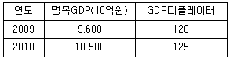
2009년 대비 2010년의 실질GDP 증가율은? (단, GDP디플레이터의 기준년도는 20⑤년)
- 4.2%
- 5%
- 6.7%
- 8%
- 9.4%
(정답률: 알수없음)
44. 저축의 역설(paradox of saving)에 관한 설명으로 옳은 것은?
- 소득이 증가하면 저축이 감소한다는 가설이다.
- 투자가 GDP와 정(＋)의 상관관계를 가질 때에는 저축이 증가하면 소득이 증가한다는 가설이다.
- 고전학파(Classical School)의 이론에서는 성립되지 않는 가설이다.
- 저축의 증가는 투자를 증가시킴으로써 경제성장을 촉진시킨다는 가설이다.
- 명목이자율의 상승이 인플레이션율을 하락시킨다는 가설이다.
(정답률: 알수없음)
45. 두 재화 X와 Y의 가격이 제1기에 PX=10, PY=40이었으며, 甲은 재화소비조합점(x, y)=(60, 20)을 선택하였다. 현시선호이론에 관한 다음 설명 중 옳은 것만을 모두 고른 것은? (단, x, y는 각각 X재와 Y재의 소비량, PX와 PY는 각각 X재와 Y재의 가격)
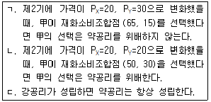
- ㄱ
- ㄱ, ㄴ
- ㄴ, ㄷ
- ㄱ, ㄷ
- ㄱ, ㄴ, ㄷ
(정답률: 알수없음)
46. 소비자 선호체계와 소비자 선택에 관한 설명으로 옳지 않은 것은?
- 효용함수가 U=X+Y이고, X재의 가격이 Y재의 가격보다 높을 때 X재만을 소비한다.
- 효용함수가 U=min{X, Y} 이라면 항상 동일한 양의 X재와 Y재를 소비한다.
- 한계대체율은 무차별곡선 기울기의 절대값을 나타낸다.
- 두 무차별곡선이 교차할 수 없다는 성질은 선호체계의 이행성으로부터 도출된다.
- 효용함수가 U=(X+Y)2이면, 무차별곡선은 직선이다.
(정답률: 알수없음)
47. 다음 ( )안에 들어갈 내용이 순서대로 올바른 것은?
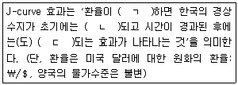
- ㄱ. 상승, ㄴ. 악화, ㄷ. 개선
- ㄱ. 상승, ㄴ. 개선, ㄷ. 개선
- ㄱ. 상승, ㄴ. 악화, ㄷ. 악화
- ㄱ. 하락, ㄴ. 악화, ㄷ. 개선
- ㄱ. 하락, ㄴ. 악화, ㄷ. 불변
(정답률: 알수없음)
48. 구매력평가설에 관한 설명으로 옳지 않은 것은?
- 구매력평가설에 의하면 일물일가의 법칙이 성립될 수 있도록 환율이 결정된다.
- 절대적 구매력평가설에 의하면 국내 인플레이션율과 해외 인플레이션율은 항상 같다.
- 절대적 구매력평가설이 성립하면 실질환율이 1이 된다.
- 무역장벽이 높을수록 구매력평가설의 현실 설명력은 감소한다.
- 비교역재(non-tradable goods)의 존재가 구매력평가설의 현실 설명력을 떨어뜨리는 요인이 된다.
(정답률: 알수없음)
49. 기대효용이론에 관한 설명으로 옳은 것은? (단, U는 효용수준, M은 자산액)
- 폰 노이만-모겐스턴(Von Neumann-Morgenstern) 효용함수에서 효용은 서수적 의미만 갖는다.
- 甲이 가지고 있는 복권 상금의 기대가치는 500이고 이 복권을 최소 450에 팔 용의가 있다면, 50을 甲의 위험프리미엄(risk premium)으로 볼 수 있다.
- 위험기피자는 기대가치가 0인 복권을 구입할 것이다.
- 위험선호자는 기대가치가 0인 보험에 가입할 것이다.
- 乙의 폰 노이만-모겐스턴 효용함수가 U=M1.5로 주어졌다면, 乙은 위험기피자이다.
(정답률: 알수없음)
50. X재와 Y재만을 소비하는 甲의 효용함수는
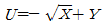
이며, 예산제약식은 3X+2Y=10이다. 효용을 극대화하는 甲의 Y재에 대한 수요량은? (단, U는 효용, X≥0, Y≥0)- 0
- 2/3
- 1.5
- 5
- 10
(정답률: 알수없음)
51. 케인즈의 단순 국민소득결정모형에서 정부지출이 2만큼 증가할 경우 균형국민소득이 10만큼 증가한다면 정부지출승수는?
- 0.2
- 0.5
- 0.8
- 2
- 5
(정답률: 알수없음)
52. 경제성장모형에서 생산함수가 Y=AK 일 때 다음 설명 중 옳은 것만을 모두 고른 것은? (단, Y는 생산량, A는 생산성수준이며 0보다 큰 상수, K는 자본량)
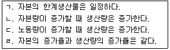
- ㄱ, ㄴ
- ㄱ, ㄴ, ㄹ
- ㄱ, ㄷ, ㄹ
- ㄴ, ㄷ, ㄹ
- ㄱ, ㄴ, ㄷ, ㄹ
(정답률: 알수없음)
53. X재 시장에서 상품의 시장공급곡선은 Qs=-110+2P이고, 시장수요곡선은 Qd=400-4P이다. 이 수요곡선과 공급곡선이 일치하는 균형상태에서 정부가 X재에 대하여 단위당 6의 판매세를 부과하는 경우, 조세부과로 인한 경제적 순손실(deadweight loss)은? (단, P는 가격, Qs는 공급량, Qd는 수요량)
- 6
- 12
- 16
- 20
- 24
(정답률: 알수없음)
54. 생산함수가 Q=5L0.4K0.6 일 때, 다음 설명 중 옳은 것은? (단, Q, L, K는 각각 생산량, 노동 투입량, 자본 투입량, Q>0, L>0, K>0)
- L=K일 경우 노동의 한계생산은 일정하다.
- 노동과 자본간의 대체탄력성은 L, K값의 크기에 따라 변한다.
- 등량곡선은 우하향하는 직선 모양을 갖는다.
- 규모에 대한 수익이 체감한다.
- 한계기술대체율은 L, K값의 크기와 관계없이 항상 일정하다.
(정답률: 알수없음)
55. 수요견인(demand pull) 인플레이션이 발생되는 경우에 해당하는 것은?
- 수입 자본재 가격의 상승
- 임금의 삭감
- 정부지출의 증가
- 환경오염의 증가
- 국제 원자재 가격의 상승
(정답률: 알수없음)
56. 다음은 무엇에 관한 설명인가?
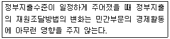
- 리카디언(Ricardian)의 동등성 정리
- 모딜리아니-밀러(Modigliani-Miller) 정리
- 정책의 동태적 비일관성 정리
- 애로(Arrow)의 불가능성 정리
- 오쿤(Okun)의 법칙
(정답률: 알수없음)
57. 甲과 乙이 총 금액 10만원을 나누어 갖는 2인 비협조게임에서 규칙은 보기와 같다. 다음 전략 중 내쉬균형에 해당하는 것은?
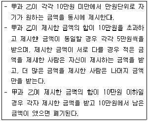
- 甲 2만원, 乙 9만원
- 甲 4만원, 乙 6만원
- 甲 5만원, 乙 6만원
- 甲 8만원, 乙 2만원
- 甲 9만원, 乙 1만원
(정답률: 알수없음)
58. 완전경쟁시장에서 이윤극대화를 추구하는 개별 기업의 장기 총비용함수는 C=2q3-12q2+48q로 동일하다. 이 시장에서의 장기 시장균형가격은? (단, C는 비용, q는 생산량, q>0)
- 3
- 10
- 15
- 30
- 35
(정답률: 알수없음)
59. A은행의 T-계정은 다음과 같다.
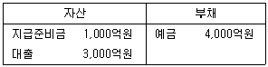
예금에 대한 법정지급준비율이 10%이고, A은행을 제외한 다른 은행들은 초과 지급준비금을 보유하지 않는다. A은행이 지급준비금을 법정지급준비금 수준까지 줄인다면 최대로 가능한 통화량 증가액은? (단, 민간의 현금보유비율은 0)
- 600억원
- 1,000억원
- 4,000억원
- 6,000억원
- 1조원
(정답률: 알수없음)
60. 필립스곡선에 관한 설명으로 옳은 것만을 모두 고른 것은?
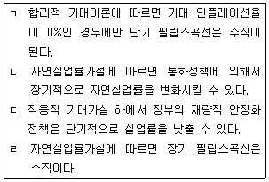
- ㄱ, ㄴ
- ㄴ, ㄷ
- ㄴ, ㄹ
- ㄱ, ㄹ
- ㄷ, ㄹ
(정답률: 알수없음)
61. 솔로우(Solow) 단순경제성장모형에서 총생산함수가 Y=2L0.5K0.5이고, 다음과 같은 조건이 주어진 경우 균제상태(steady state)에서 1인당 국민소득(y)의 값은? (단, Y는 총국민소득, L은 노동투입량, K는 자본투입량,
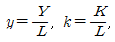
y>0, k>0)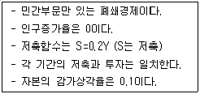
- 2
- 4
- 8
- 12
- 16
(정답률: 알수없음)
62. 수요독점 노동시장에 관한 설명으로 옳지 않은 것은? [단, 노동공급곡선은 우상향, 노동의 한계수입생산(marginal revenue product)곡선은 우하향, 이윤을 극대화하는 수요독점기업은 상품시장에서도 독점기업임]
- 이 노동시장의 균형고용량은 완전경쟁 노동시장의 균형고용량보다 적다.
- 이 노동시장의 균형임금과 완전경쟁 노동시장의 균형임금 사이에 최저임금을 강제적으로 설정할 경우 고용량이 증가할 수 있다.
- 이 노동시장의 균형임금은 노동의 한계수입생산보다 낮은 수준에서 결정된다.
- 이 노동시장의 균형임금은 완전경쟁 노동시장의 균형임금보다 낮다.
- 이 노동시장의 균형임금과 완전경쟁 노동시장의 균형임금 사이에 최저임금을 강제적으로 설정할 경우 노동의 평균요소비용과 한계요소비용이 모두 감소한다.
(정답률: 알수없음)
63. 시장실패에 관한 설명으로 옳지 않은 것은?
- 시장실패는 시장기능을 통하여 자원이 효율적으로 배분되지 않는 경우를 포함한다.
- 정부개입이 사회후생을 증대시키는데 도움을 줄 수 있다.
- 시장실패는 외부효과가 존재하는 경우 발생할 수 있다.
- 시장실패는 소유권이 명확하게 규정되지 않은 경우 발생할 수 있다.
- 코즈(Coase)정리에 의하면 시장실패는 시장에서 해결될 수 없다.
(정답률: 알수없음)
64. 이자율과 관련된 피셔효과(Fisher effect)의 설명으로 옳은 것은?
- 기대 인플레이션율이 상승하면 명목이자율은 상승한다.
- 피셔효과는 실질이자율에서 물가상승율을 뺀 것이다.
- 통화량이 증가하면 이자율은 하락한다.
- 소득이 증가하면 이자율은 상승한다.
- 통화량 증가와 이자율과는 연관이 없다.
(정답률: 알수없음)
65. IS곡선에 관련된 설명으로 옳지 않은 것은? (단, IS곡선은 우하향)
- IS곡선은 생산물시장의 균형을 이루는 이자율과 국민소득의 조합을 나타낸다.
- 현재의 이자율과 국민소득의 조합점이 IS곡선보다 위쪽에 있다면, 생산물시장에서 수요가 공급을 초과하고 있음을 의미한다.
- 조세부담이 증가하면 IS곡선은 좌측으로 이동한다.
- 정부의 재정지출이 증가하면 IS곡선은 우측으로 이동한다.
- 한계소비성향이 높아질수록 IS곡선은 더 완만해진다.
(정답률: 알수없음)
66. 독점시장에 관한 설명으로 옳은 것은? (단, 독점기업은 이윤을 극대화, 수요곡선은 우하향하는 직선)
- 독점기업은 시장수요곡선의 가격탄력성이 1보다 큰 구간에서 재화를 생산한다.
- 가격과 한계비용이 일치하는 점에서 균형이 발생한다.
- 단기적으로 균형에서 가격이 평균비용보다 낮으면 이익이 발생한다.
- 공급곡선이 존재한다.
- 독점기업이 직면하는 한계수입곡선은 우상향한다.
(정답률: 알수없음)
67. 가변생산요소가 하나인 기업의 단기비용곡선에 관한 설명으로 옳지 않은 것은? (단, 평균총비용곡선은 U자 모양, 고정비용 존재, 생산요소가격은 불변)
- 생산량이 증가함에 따라 한계비용이 증가할 때 한계생산물이 체감한다.
- 평균가변비용곡선의 최저점은 평균총비용곡선의 최저점보다 좌측에 위치한다.
- 한계비용이 평균총비용보다 작을 때 평균총비용이 상승한다.
- 한계비용곡선은 평균총비용곡선의 최저점을 통과한다.
- 생산량이 증가함에 따라 평균고정비용이 감소한다.
(정답률: 알수없음)
68. 다음 중 옳은 것만을 모두 고른 것은?
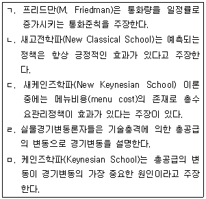
- ㄱ, ㄴ, ㅁ
- ㄱ, ㄴ, ㄷ
- ㄱ, ㄷ, ㄹ
- ㄴ, ㄷ, ㅁ
- ㄴ, ㄷ, ㄹ
(정답률: 알수없음)
69. 전통적 화폐수량설에 근거한 화폐의 중립성이 성립할 경우 다음 설명 중 옳지 않은 것은?
- 통화량 증가율을 증가시키면 명목이자율이 상승한다.
- 통화량 증가율을 증가시키면 인플레이션율이 상승한다.
- 통화량을 증가시켜도 실질 국민소득수준은 변화하지 않는다.
- 통화량을 증가시키면 실업률은 하락한다.
- 통화량을 증가시켜도 실질이자율은 변화하지 않는다.
(정답률: 알수없음)
70. 총수요-총공급(AD-AS)모형에 관한 설명으로 옳지 않은 것은? (단, 총수요곡선은 우하향, 총공급곡선은 우상향)
- 독립투자 증가는 총수요곡선을 우측으로 이동시킨다.
- 정부지출 증가는 총수요곡선을 우측으로 이동시킨다.
- 조세 증가는 총수요곡선을 좌측으로 이동시킨다.
- 통화공급 증가는 총수요곡선을 좌측으로 이동시킨다.
- 기술 진보는 총공급곡선을 이동시킨다.
(정답률: 알수없음)
71. 독점적 경쟁시장의 특징으로 옳은 것은? (단, 수요곡선은 우하향)
- 공급자의 수가 소수이며, 제품의 품질이 동일한 경우이다.
- 장기균형에서 개별기업의 이윤은 0이다.
- 공급자가 하나이고 수요자가 많은 경우이다.
- 균형가격은 개별기업의 한계수입보다 낮다.
- 균형가격은 한계비용과 같다.
(정답률: 알수없음)
72. 다음 ( )안의 용어가 순서대로 올바른 것은?
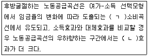
- ㄱ. 임금, ㄴ. 대체
- ㄱ. 가격, ㄴ. 소득
- ㄱ. 가격, ㄴ. 대체
- ㄱ. 소득, ㄴ. 소득
- ㄱ. 소득, ㄴ. 대체
(정답률: 알수없음)
73. 다음은 국가간 자본이동이 완전한 소규모개방경제의 모형이다. 해외 이자율이 10으로 항상 일정할 때 중앙은행이 통화량을 20만큼 증가시킨다면, 통화량 증가 전과 후의 균형국민소득의 차이는? (단, Y는 국민소득, C는 소비, I는 투자, G는 정부지출, X는 수출, M은 수입, LD는 실질화폐수요, LS는 명목화폐공급, P는 물가수준, r은 국내 이자율, 국내 이자율 수준은 해외 이자율 수준과 같다.)
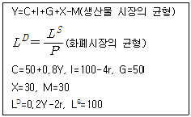
- 0
- 20
- 40
- 80
- 100
(정답률: 알수없음)
74. 고전학파의 대부자금설이 성립할 경우 정부가 저축을 촉진하기 위해 이자소득세를 인하하고 동시에 투자를 촉진하는 투자세액공제제도를 도입할 때 예상되는 대부자금 시장의 변화로 옳은 것은? (단, 수요곡선은 우하향, 공급곡선은 우상향)
- 균형이자율 상승, 균형거래량 증가
- 균형이자율 상승, 균형거래량 감소
- 균형이자율 하락, 균형거래량 증가
- 균형이자율 하락, 균형거래량 증감 불분명
- 균형이자율 등락 불분명, 균형거래량 증가
(정답률: 알수없음)
75. 10가구만 살고 있는 마을에서 공공재를 생산하고자 한다. 이 공공재에 대한 개별가구의 수요함수는 Q=100-10P로 동일하고, 이 공공재 생산의 한계비용은 5로 일정하다. 이 마을의 사회적 후생을 극대화시키는 공공재 생산량은? (단, Q는 수요량, P는 가격)
- 50
- 95
- 125
- 250
- 500
(정답률: 알수없음)
76. 외부효과에 관한 설명으로 옳은 것은?
- 생산의 외부불경제가 존재하는 경우 사회적 최적생산량은 시장균형생산량보다 많다.
- 소비의 외부경제가 존재하는 경우 사회적 최적소비량은 시장균형소비량보다 적다.
- 외부효과의 내부화로는 외부효과의 비효율성을 해결할 수 없다.
- 교정적 조세는 경제적 효율을 향상시키면서 정부의 조세수입도 증대시킨다.
- 오염배출권 거래제에서는 정부가 오염배출권의 가격을 먼저 설정함으로써 사회적 총오염배출량이 결정된다.
(정답률: 알수없음)
77. 어빙 피셔(Irving Fisher)의 2기간 최적 소비선택 모형에서 도출되는 결론으로 옳은 것만을 모두 고른 것은? (단, 기간별로 소비되는 재화는 모두 정상재, 차입제약은 없고, 각 기간의 소비는 모두 0보다 큼)
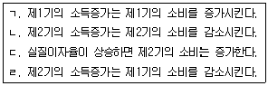
- ㄱ, ㄴ
- ㄴ, ㄷ
- ㄱ, ㄷ
- ㄴ, ㄹ
- ㄷ, ㄹ
(정답률: 알수없음)
78. 한계소비성향의 정의로 옳은 것은?
- 소비를 소득으로 나눈 것이다.
- 소비를 저축으로 나눈 것이다.
- 소비를 가처분소득으로 나눈 것이다.
- 소비의 증가분을 저축의 증가분으로 나눈 것이다.
- 소비의 증가분을 가처분소득의 증가분으로 나눈 것이다.
(정답률: 알수없음)
79. 독점기업이 시장을 A, B로 구분하여 가격차별을 통해 이윤을 극대화하고 있다. 독점기업의 한계비용은 생산량과 관계없이 10으로 일정하고 현재 A, B 두 시장의 수요의 가격탄력성은 각각 2와 3이다. A, B 두 시장에서 독점기업이 설정하는 가격은?
- A: 30, B: 20
- A: 20, B: 15
- A: 15, B: 10
- A: 20, B: 30
- A: 25, B: 30
(정답률: 알수없음)
80. 생산함수가 Q=2L+3K일 때 노동과 자본 간의 대체탄력성(elasticity of substitution)은? (단, Q, L, K는 각각 생산량, 노동 투입량, 자본 투입량, Q>0, L>0, K>0)
- 0
- 1
- 2/3
- 1.5
- 무한대(∞)
(정답률: 알수없음)
이유: 이사는 회사를 대리하는 자로서 회사의 이익을 위해 노력해야 하지만, 이사로서의 업무와 별개로 개인적인 이유로 인해 보증계약을 해지하고자 할 경우에는 그에 따른 법적인 절차를 따르면 된다. 이는 신의성실의 원칙에 반하지 않는다.